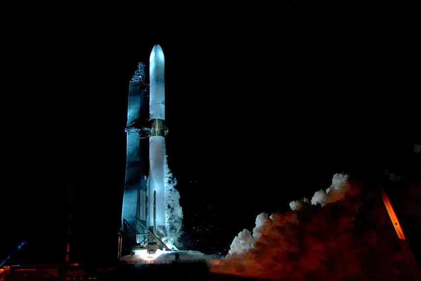
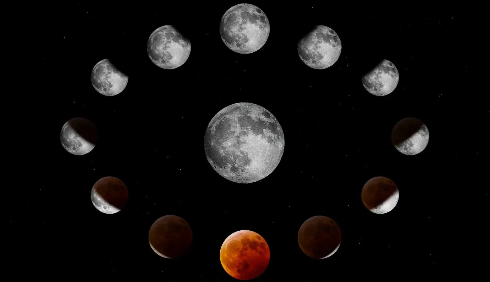
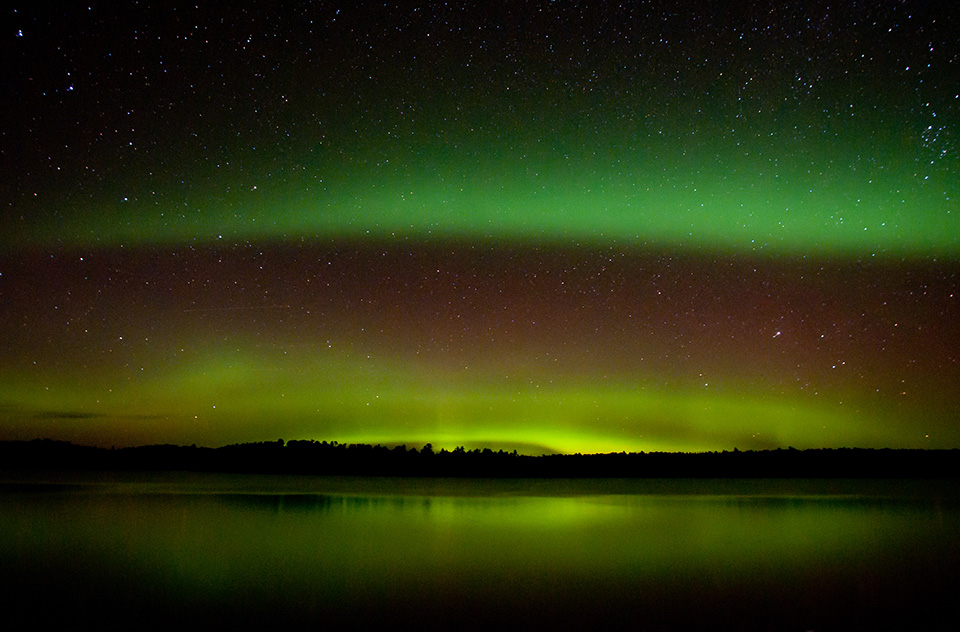
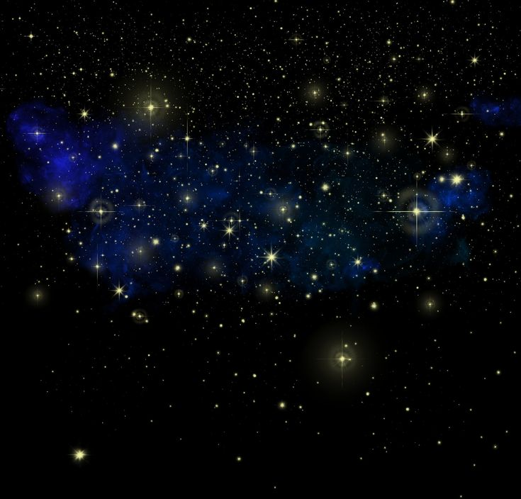

Trending Articles

Blue Origin New Glenn 1st Launch
Blue Origin's New Glenn rocket is set to make its first launch, promising to revolutionize space travel with its reusable design.

Next Full Moon
Mark your calendars! The next full moon will be a spectacular sight, perfect for stargazing and lunar photography.

Aurora Forecast
Get ready for an incredible display of the northern lights! Our latest forecast predicts optimal viewing conditions.

Night Sky
Explore the wonders of the night sky with our guide to the best celestial events happening this month.